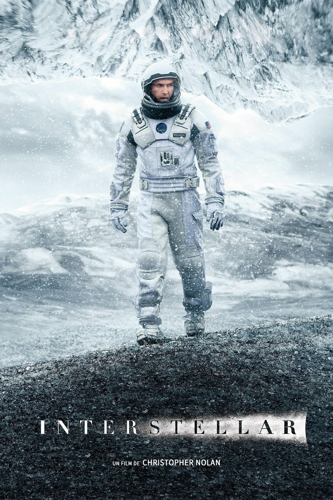

Interstellar (film)

Interstellar is a 2014 epic science fiction film co-written, directed, and produced by Christopher Nolan. It stars Matthew McConaughey, Anne Hathaway, Jessica Chastain, Bill Irwin, Ellen Burstyn, Matt Damon, and Michael Caine. Set in a dystopian future where humanity is embroiled in a catastrophic blight and famine, the film follows a group of astronauts who travel through a wormhole near Saturn in search of a new home for humankind.
Brothers Christopher and Jonathan Nolan wrote the screenplay, which had its origins in a script Jonathan developed in 2007 and was originally set to be directed by Steven Spielberg. Kip Thorne, a Caltech theoretical physicist and 2017 Nobel laureate in Physics,[4] was an executive producer, acted as a scientific consultant, and wrote a tie-in book, The Science of Interstellar. Cinematographer Hoyte van Hoytema shot it on 35 mm movie film in the Panavision anamorphic format and IMAX 70 mm. Principal photography began in late 2013 and took place in Alberta, Iceland, and Los Angeles. Interstellar uses extensive practical and miniature effects, and the company Double Negative created additional digital effects.
Interstellar premiered in Los Angeles on October 26, 2014. In the United States, it was first released on film stock, expanding to venues using digital projectors. The film received generally positive reviews from critics and grossed over $681 million worldwide ($703 million after subsequent re-releases), making it the tenth-highest-grossing film of 2014. It has been praised by astronomers for its scientific accuracy and portrayal of theoretical astrophysics.[5][6][7] Interstellar was nominated for five awards at the 87th Academy Awards, winning Best Visual Effects, and received numerous other accolades.
Plot
In 2067, humanity is facing extinction following a global famine caused by ecocide.[8] Joseph Cooper, an ex-NASA pilot, who lives with his son Tom, daughter Murph and father-in-law Donald, is forced to work as a farmer.
After noticing some odd occurrences in Murph's room, Cooper concludes that a gravitational anomaly is at work. He notices it creating dust patterns on the floor, and decodes it to GPS coordinates that lead to a secret NASA facility. The team at the facility, headed by Dr Brand, show Cooper other anomalies in the solar system, including a mysterious wormhole near the planet Saturn. They surmise that these anomalies, collectively, were placed by "them", a supernatural extra-terrestrial entity wishing to guide humanity to an exoplanet to save itself from extinction. NASA's "Plan A" is to follow the wormhole to the other galaxy, find an exoplanet capable of supporting life, and transport humanity off the dying Earth in a mass exodus (made possible by Brand's yet-to-be-solved gravity equation). Failing this, "Plan B" is to use embryos to seed an extra-terrestrial colony on a new planet, while letting Earth's original population perish.
Brand invites Cooper to pilot the mission. Believing that Plan A can save Murph's generation, Cooper agrees. He pilots the spacecraft Endurance, transporting a crew of three scientists: Romilly, Doyle, and Brand’s daughter Amelia, and two robot assistants TARS and CASE, to the other galaxy. On the other side of the wormhole, the crew investigate three planets orbiting a supermassive black hole, Gargantua, each previously visited by a NASA scientist-explorer. The first planet, an ocean world of shallow water assigned to explorer Laura Miller, turns out to have colossal tidal waves generated by Gargantua's gravity. Laura is presumed killed after the crew find debris at her beacon's location. Doyle is swept away by a huge wave, and Cooper and Amelia narrowly escape the next. They return to the Endurance, where Romilly has been studying the blackhole while in orbit. Though they spent only a couple of hours on the planet, 23 years have passed aboard Endurance and on Earth, due to the time dilation caused by Gargantua's gravity. Back on Earth, Murph has become a scientist working with NASA. A dying Brand confesses to Murph that Plan A is unviable as the gravity-equation cannot be solved without data obtainable only from inside a black hole. He predicts humanity on Earth is doomed to perish. Murph assumes this to mean that her father knowingly abandoned her, but also continues Brand's work after his death. She visits her childhood bedroom, as the original source of the gravitational anomaly, looking for additional clues. In the other galaxy, the Endurance crew's second mission fails as well, as they learn that the planet's explorer, Mann, lied about the ice planet's habitability. Determined to save himself, Mann attempts to kill the crew while setting off with a Ranger craft to hijack the Endurance. Romilly is killed at the base, Cooper and Amelia escape in a Lander craft, and Mann dies in an explosion caused by a failed docking procedure. Cooper and Amelia regain control of the damaged Endurance and devise a plan to reach the third and final planet, assigned to Dr Wolf Edmundds.
Cooper initiates a slingshot maneuver around Gargantua, trying to propel the Endurance to the third planet. He sacrifices himself and TARS to shed extra weight, setting up Amelia to safely reach Edmunds. TARS and Cooper are sucked into the blackhole, in which they encounter a four-dimensional tesseract where time is physically presented. Seeing past moments from Murph's childhood bedroom, Cooper tries to contact her by manipulating items in the room with gravity. Cooper deduces he was the source of the anomaly in Murph's room that started this mission, and concludes that this construct was created by future humans - "them" - for him to send information to Murph in the past. With TARS's help, he relays the data Murph needs to solve the gravity equation. The tesseract closes, ejecting Cooper and TARS to Saturn's orbit. Cooper is rescued and brought to an O'Neill Cylinder, where he reunites with an elderly Murph. Murph used the gravity equation to accomplish Plan A, saving humanity from extinction. Nearing death due to old age, Murph advises Cooper to seek out Amelia, alone on the mission's final planet. Cooper and TARS set off again to Edmunds' planet; meanwhile, Amelia buries the deceased Edmunds on the last planet before removing her helmet to breathe.
Cast
- Matthew McConaughey
as Joseph Cooper,[a] a widowed NASA pilot who, after the agency was closed by the government, became a farmer
- Anne Hathaway
as Dr. Amelia Brand, a NASA scientist, astronaut, and Professor John's daughter
Production
Crew
Development and financing
The premise for Interstellar was conceived by the producer Lynda Obst and the theoretical physicist Kip Thorne, who collaborated on the film Contact (1997), and had known each other since Carl Sagan set them up on a blind date.[9][10] The two conceived a scenario, based on Thorne's work, about "the most exotic events in the universe suddenly becoming accessible to humans", and attracted Steven Spielberg's interest in directing.[11] The film began development in June 2006, when Spielberg and Paramount Pictures announced plans for a science-fiction film based on an eight-page treatment written by Obst and Thorne. Obst was attached to produce.[12][13] By March 2007, Jonathan Nolan was hired to write a screenplay.[14]
After Spielberg moved his production studio, DreamWorks, from Paramount to Walt Disney Studios in 2009, Paramount needed a new director for Interstellar. Jonathan Nolan recommended his brother Christopher, who joined the project in 2012.[15] Christopher Nolan met with Thorne, then attached as executive producer, to discuss the use of spacetime in the story.[16] In January 2013, Paramount and Warner Bros. announced that Christopher Nolan was in negotiations to direct Interstellar.[17] Nolan said he wanted to encourage the goal of human spaceflight,[18] and intended to merge his brother's screenplay with his own.[19] By the following March, Nolan was confirmed to direct Interstellar, which would be produced under his label Syncopy and Lynda Obst Productions.[20] The Hollywood Reporter said Nolan would earn a salary of $20 million against 20% of the total gross.[21] To research for the film, Nolan visited NASA and the private space program at SpaceX.[16]
Warner Bros. sought a stake in Nolan's production of Interstellar from Paramount, despite their traditional rivalry, and agreed to give Paramount its rights to co-finance the next film in the Friday the 13th horror franchise, with a stake in a future film based on the television series South Park. Warner Bros. also agreed to let Paramount co-finance an indeterminate "A-list" property.[22] In August 2013, Legendary Pictures finalized an agreement with Warner Bros. to finance approximately 25% of the film's production. Although it failed to renew its eight-year production partnership with Warner Bros., Legendary reportedly agreed to forgo financing Batman v Superman: Dawn of Justice (2016) in exchange for the stake in Interstellar.
Writing and casting

The Dust Bowl phenomenon of the 1930s, as documented by Ken Burns
in The Dust Bowl (2012), served as inspiration for the blight.
Jonathan Nolan worked on the script for four years.[9] To learn the scientific aspects, he studied relativity at the California Institute of Technology.[24] He was pessimistic about the Space Shuttle program ending and how NASA lacked financing for a human mission to Mars, drawing inspiration from science-fiction films with apocalyptic themes, such as WALL-E (2008) and Avatar (2009). Jeff Jensen of Entertainment Weekly said: "He set the story in a dystopian future ravaged by blight, but populated with hardy folk who refuse to bow to despair."[15] His brother Christopher had worked on other science fiction scripts but decided to take the Interstellar script and choose among the vast array of ideas presented by Jonathan and Thorne. He picked what he felt, as director, he could get "across to the audience and hopefully not lose them," before he merged it with a script he had worked on for years on his own.[16][25] Christopher kept in place Jonathan's conception of the first hour, which is set on a resource depleted Earth in the near future. The setting was inspired by the Dust Bowl that took place in the United States during the Great Depression in the 1930s.[9] He revised the rest of the script, where a team travels into space, instead.[9] After watching the 2012 documentary The Dust Bowl for inspiration, Christopher contacted the director, Ken Burns, and the producer, Dayton Duncan. They granted him permission to use some of their featured interviews in Interstellar.[26]
Christopher Nolan wanted an actor who could bring to life his vision of the main character as an everyman with whom "the audience could experience the story."[27] He became interested in casting Matthew McConaughey after watching him in an early cut of the 2012 film Mud,[27] which he had seen as a friend of one of its producers, Aaron Ryder.[9] Nolan went to visit McConaughey while he was filming for the TV series True Detective.[28] Anne Hathaway was invited to Nolan's home, where she read the script for Interstellar.[29] In early 2013, both actors were cast in the starring roles.[30] Jessica Chastain was contacted while she was working on Miss Julie (2014) in Northern Ireland, and a script was delivered to her.[29] Originally, Irrfan Khan was offered the role of Dr. Mann but rejected it due to scheduling conflicts. Matt Damon was cast as Mann in late August 2013 and completed filming his scenes in Iceland.[31]
Reception
Box office
Interstellar grossed $188 million in the US and Canada, and $493 million in other countries, for a worldwide total of $681 million on original release, against a production budget of $165 million.[3] Deadline Hollywood calculated net profit to be $47 million, accounting for production budgets, marketing, talent participations, and other costs, with box office grosses, and ancillary revenues from home media, placing it 20th on their list of 2014's "Most Valuable Blockbusters".[109] It sold an estimated 22 million tickets domestically.[110]
The film set an IMAX opening record worldwide with $20.5 million from 574 IMAX theaters, surpassing the $17 million record held by The Hunger Games: Catching Fire (2013), and is the best opening for an IMAX 2D, non-sequel, and November IMAX release.[111] It had a worldwide opening of $133 million, which was the tenth-largest opening of 2014,[112] and became the tenth-highest-grossing film of 2014.[113] Interstellar is the fourth film to gross over $100 million worldwide from IMAX ticket sales.[114][115][116] It was released in the UK, Ireland and Malta on November 6, 2014, and debuted at number one earning £5.5 million ($8.6 million) in its opening weekend, which was lower than the openings of The Dark Knight Rises (£14.4 million), Gravity (£6.2 million), and Inception (£5.9 million).[117] The film was released in 35 markets on the same day, including major markets like Germany, Russia, Australia, and Brazil earning $8.7 million in total.[118] Through Sunday, it earned an opening weekend total of $83 million from 11.1 million admissions from over 14,800 screens in 62 markets.[119] It earned $7.3 million from 206 IMAX screens, at an average of 35,400 viewers per theater.[120] It went to number one in South Korea ($14.4 million),[121] Russia ($8.9 million), and France ($5.3 million). Other strong openings occurred in Germany ($4.6 million), India ($4.3 million), Italy ($3.7 million), Australia ($3.7 million), Spain ($2.7 million), Mexico ($3.1 million), and Brazil ($1.9 million).[122] Interstellar was released in China on November 12 and earned $5.4 million on its opening day on Wednesday, which is Nolan's biggest opening in China after surpassing the $4.61 million opening record of The Dark Knight Rises.[123][124] It went on to earn $41.7 million in its opening weekend, accounting for 55% of the market share.[125][126] It is Nolan's biggest opening in China, Warner Bros.' biggest 2D opening,[127] and the studio's third-biggest opening of all time, behind 2014's The Hobbit: The Battle of the Five Armies ($49.5 million)[128] and 2013's Pacific Rim ($45 million).[129][130][needs update?]
It topped the box office outside North America for two consecutive weekends before being overtaken by The Hunger Games: Mockingjay – Part 1 (2014) in its third weekend.[127] Just 31 days after its release, the film became the 13th-most-successful film and 3rd-most-successful foreign film in South Korea with 9.1 million admissions trailing only Avatar (13.3 million admissions), and 2013's Frozen (10.3 million admissions).[131] The film closed down its theatrical run in China on December 12, with total revenue of $122.6 million.[132][133] In total earnings, its largest markets outside North America and China were South Korea ($73.4 million), the UK, Ireland and Malta ($31.3 million), and Russia and the Commonwealth of Independent States (CIS) ($19 million).[134] Interstellar and Big Hero 6 opened the same weekend (November 7–9, 2014) in the US and Canada. Both were forecast to earn between $55 million and $60 million.[135] In North America, the film is the seventh-highest-grossing film to not hit No. 1, with a top rank of No. 2 on its opening weekend.[136] Interstellar had an early limited release in the US and Canada in selected theaters on November 4 at 8:00 pm, coinciding with the 2014 US midterm elections.[137] It topped the box office the following day, earning $1.35 million from 249 theaters (42 of which were IMAX screens); IMAX accounted for 62% of its total gross.[138] Two hundred and forty of those theaters played in 35 mm, 70 mm, and IMAX 70 mm film formats.[139] It earned $3.6 million from late-night shows for a previews total of $4.9 million.[140][141][142] The film was widely released on November 7 and topped the box office on its opening day, earning $17 million ahead of Big Hero 6 ($15.8 million).[143] On its opening weekend, the film earned $47.5 million[b] from 3,561 theaters, debuting in second place after a neck-and-neck competition with Disney's Big Hero 6 ($56.2 million).[145] IMAX comprised $13.2 million (28%) of its opening weekend gross,[145] while other premium large-format screens comprised $5.3 million (10.5%) of the gross.[146][147] In its second weekend, the film fell to No. 3 behind Big Hero 6 and newcomer Dumb and Dumber To (2014), and dropped 39% earning $29 million for a two-weekend total of $98 million.[148][149] It earned $7.4 million from IMAX theaters from 368 screens in its second weekend.[150][151] In its third week, the film earned $15 million and remained at No. 3, below newcomer The Hunger Games: Mockingjay – Part 1 and Big Hero 6.[152]
Scientific accuracy
Regarding the concepts of wormholes and black holes, Kip Thorne said he "worked on the equations that would enable tracing of light rays as they traveled through a wormhole or around a black hole—so what you see is based on Einstein's general relativity equations".[59] Early in the process, Thorne laid down two guidelines: "First, that nothing would violate established physical laws. Second, that all the wild speculations ... would spring from science and not from the fertile mind of a screenwriter." Nolan accepted these terms as long as they did not get in the way of making the film.[13] At one point, Thorne spent two weeks arguing Nolan out of having a character traveling faster than light before Nolan finally gave up.[60] According to Thorne, the element that has the highest degree of artistic freedom is the clouds of ice on one of the planets they visit, which are structures that would go beyond the material strength that ice could support.[13]
The astrobiologist David Grinspoon criticized the dire "blight" situation on Earth portrayed in the early scenes, pointing out that even with a voracious blight it would have taken millions of years to reduce the atmosphere's oxygen content. He also notes that gravity should have pulled down the ice clouds.[61] Neil deGrasse Tyson, an astrophysicist, explored the science behind the ending of Interstellar, concluding that it is theoretically possible to interact with the past, and that "we don't really know what's in a black hole, so take it and run with it".[62] The theoretical physicist Michio Kaku praised the film for its scientific accuracy and said Interstellar "could set the gold standard for science fiction movies for years to come". Timothy Reyes, a former NASA software engineer, said "Thorne's and Nolan's accounting of black holes and wormholes and the use of gravity is excellent".[63]